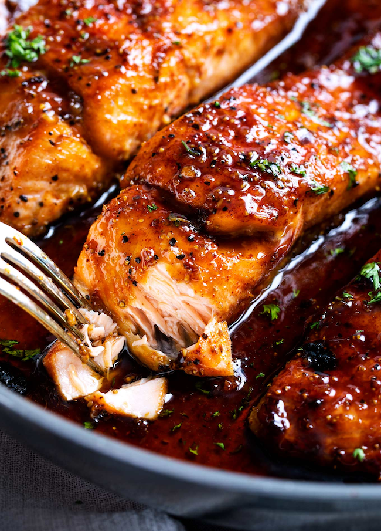

Honey Garlic Glazed Salmon

Have you ever made a recipe that truly surprised you? Normally I’m not a huge salmon lover, but after one bite of this ultra tender salmon, I was absolutely in love. I literally did a little dance in the kitchen because I finally found a way that I can enjoy salmon!
INSTRUCTIONS
Salmon
4 (6 oz each) salmon filets
1/2 tsp smoked paprika (or regular paprika)
1/4 tsp blackening seasoning (optional)
Sauce
INSTRUCTIONS
- Pat salmon dry, then season with salt, pepper, paprika and blackening seasoning (if using). Set aside. Adjust oven rack to middle position, then preheat broiler.
- Add butter and oil to a large, oven-safe skillet over MED-HIGH heat. Once butter is melted, add garlic, water, soy sauce, sriracha, honey and lemon juice and cook 30 seconds or so, until sauce is heated through.
- Add salmon, skin side down (if using salmon with skin), and cook 3 minutes. While salmon cooks, baste frequently with sauce from the pan by spooning it over the top of the salmon.
- Broil salmon for 5-6 minutes, basting with sauce once during the broil, until salmon is caramelized and cooked to desired doneness.
- Garnish with minced parsley if desired.
Return to HomePage